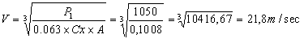
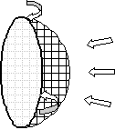

Può essere interessante cercare di determinare
preventivamente quale sarà la velocità massima che potrà raggiungere il nostro
hovercraft, in assenza di attriti, vento contrario ecc.
I parametri da fissare sono i seguenti:
1. P = potenza installata del motore di spinta con ventola libera, non
parzializzata espressa in kp·m/s
2. A = sezione frontale dello scafo, gonna compresa, in m2
3. η = rendimento totale della ventola, trasmissione, griglia di protezione ecc.
4. Cx = coefficiente aerodinamico dello scafo
Posto:
P1 la potenza corretta = η x
P
A la sezione frontale ( in m2 )
V la velocità massima ( in m/s )
Si può applicare la formula empirica:
P1 = 0,063 x Cx x A x V3
dove P1 deve essere espresso in kp·m/s
Nota: disponendo della potenza espressa in Hp moltiplicare per 75 per ottenere il valore in kp·m/s , mentre nel caso in cui la potenza sia espressa in Watt moltiplicare per 0,1019 per ottenere il valore in kp·m/s
Tipicamente il rendimento si aggira intorno al 40% ( η ≈ 0,4 ) ed il coefficiente aerodinamico Cx ≈ 0,8
Esempio:
Motore Rotax 35 Hp
Convertendo la potenza in kp·m/s si ha: 35 x 75 = 2625 kp·m/s e supponendo η ≈ 0,4 (valore usuale) si ha:
P1 = η x P= 0,4 x 2625 = 1050 kp·m/s
e supponendo la sezione frontale : A = 2 m2
Applicando la formula abbiamo :
1050=0,063x0,8x2xV3
da cui:

Dunque la velocità massima
raggiungibile sarà di 21,8 x 3,6 = 78,6 km/h. 
Al fine di ottimizzare il nostro scafo possiamo solo rimandare la lettura al
paragrafo delle ventole di spinta e far notare che un riduttore di giri ad
ingranaggi, se applicabile, ha generalmente un rendimento superiore rispetto ad
uno a cinghia mentre per la griglia di protezione si deve preferire la sagoma
bombata rispetto ad una piana per ridurne la resistenza di attrito dell'aria in
aspirazione.